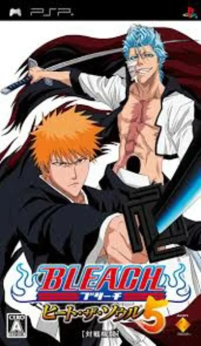

PSP
Bleach: Heat the Soul 5
- Género: Lucha
- Jugadores: 2 jugadores
La saga de Bleach: Heat the Soul son combates en 3D. Hay dos botones para golpear, X y O. Cada personaje posee una larga lista de combos para realizar con la combinación de estos botones y la flecha de dirección. El triangulo sirve para saltar y el cuadrado para recargar el reiatsu (energía). Este último, se indica en una barra que se recarga hasta nueve veces sin gastar energía. Cuantas más barras tengas, más fuerte es tu personaje. Estas se realizan con cuadrado más X o O. Hay de diferentes clases, un gran disparo de energía (Como el Directo de Chad), un corto ataque cinematográfico o Ichigo se coloca la máscara de Vizard.
Hasta Bleach: Heat the Soul 5, los Bankais y Shikais de los Shinigamis, eran personajes independientes. En este último, los personajes pueden liberar sus zanpakutō en pleno combate. Con un previo gasto de energía, se activa apretando L más R. Además, este último añade el modo Tag, en el cual luchas en parejas. Hay una barra que te indica la disponibilidad del personaje de apoyo. Cuando esta llena, L sirve para cambiar de personaje y R para que realizar un ataque o apoyo del personaje auxiliar. Llega un momento en el cual puedes activar un modo, donde realiza un ataque final combinado, pero solo con ciertas parejas (como la de Shinji Hirako y Hiyori Sarugaki.
Bleach: Heat the Soul 5 salió a la venta el 15 de marzo de 2008. . La historia abarca desde la entrada a Hueco Mundo al rescate de Orihime Inoue hasta el encuentro final de Ichigo y Grimmjow. El juego presenta 59 personajes (contando transformaciones). Como novedad, los Bankais se liberan en pleno combate y se puede realizar combates 2 vs 2.
Controles
que el luchador se mueva con el joystick. Según la serie: B (✕) golpe flojo, A (○) golpe fuerte, X (△) saltar, Y (□) cargar el reiatsu (energía), Y + B o Y + A técnica especial, R cancelar el combo y L + R potenciarse o transformarse; alejarse del rival para cubrirse. ¿Va fluido? En este juego hay combates por parejas: L cambia de personaje y R llama al compañero.
Mando de PSP. El joystick mueve la cruceta y también la palanca analógica, porque muchos juegos de PSP solo se mueven con ella.
| Panel | Juego |
|---|---|
 | ✕ |
 | ○ |
 | R |
 | □ |
 | △ |
 | L |
 | Start |
 | Select |
+  | Salir del juego |
El panel en PSP


Argumento
Recopilado de internet (2026-11-04). Lo marcado con ⚠️ no está probado en la bartop.
Sigue donde lo dejó el cuarto: va desde la entrada en Hueco Mundo, el mundo de los Hollow, hasta el combate entre Grimmjow e Ichigo.
Final: ⚠️ las fuentes no lo cuentan; en el vídeo de «Vídeos», la última misión es Ichigo contra Grimmjow.
Jugabilidad
Recopilado de internet (2026-11-04). Lo marcado con ⚠️ no está probado en la bartop.
- Lucha en 3D con gráficos tipo dibujo animado (cel-shading), de Eighting, basada en el manga y el anime Bleach de Tite Kubo. Solo salió en Japón (en japonés).
- Golpes: dos botones de ataque que se combinan con las direcciones en combos.
- Reiatsu: la barra de energía; cuantas más barras, más fuerte el personaje. Sirve para las técnicas especiales, que suelen tener una escena cinematográfica.
- Combates por parejas (Tag): la novedad. Hay una barra que indica cuándo está disponible el compañero; con ella llena, L cambia de personaje y R hace un ataque o una ayuda del compañero. Algunas parejas tienen un ataque final combinado. Hay tres estilos de pareja: ofensivo, defensivo y técnico.
- Transformarse en combate: por primera vez, las liberaciones de la espada (Shikai, Bankai) se hacen en pleno combate, con dos barras de reiatsu (antes eran personajes aparte). ⚠️ La Wikipedia en inglés dice que con L y la española, que con L + R.
- 32 personajes en combates por parejas; con una partida guardada de Heat the Soul 4 se pasan más, solo para combates individuales.
Botones según las guías (⚠️ por confirmar)
Los de la serie, según la Wikipedia en español y una guía de Heat the Soul 6; en otras entregas pueden cambiar algo.
| Mando de PSP | Panel | Acción |
|---|---|---|
| Cruceta / palanca |  | Moverse · hacia atrás: cubrirse · arriba o abajo (un toque): esquivar de lado · dos toques hacia el rival: carrera |
| ✕ | | Dar un golpe flojo |
| ○ | | Dar un golpe fuerte |
| △ | | Saltar (dos veces: impulso en el aire) |
| □ | | Cargar el reiatsu (la energía; si el rival está cerca al soltarlo, queda aturdido) |
| □ + ✕ / □ + ○ | + / + | Hacer la técnica especial del personaje (la mayoría tienen dos) |
| □ + △ | + | Hacer el Soul Blaze, una serie larga de golpes |
| R | | Cancelar el combo (gasta reiatsu) |
| L + R | + | Con la barra de reiatsu llena dos veces: potenciarse y, si puede, transformarse (por ejemplo, Ichigo de Shikai a Bankai) |
| Start | | Pausar |
- Si dos personajes hacen la carrera a la vez, chocan: gana el que pulse más rápido los botones.
- En el modo potenciado, durante un rato: técnicas especiales sin límite, más combos y la vida sube poco a poco.
Guía de niveles
Recopilado de internet (2026-11-04). Lo marcado con ⚠️ no está probado en la bartop.
- Modo historia (misiones).
- Tag Master: dos personajes contra una serie de combates.
- El vídeo de «Vídeos» hace 17 misiones.
Objetos
Recopilado de internet (2026-11-04). Lo marcado con ⚠️ no está probado en la bartop.
| Objeto | Qué hace |
|---|---|
| (ninguno) | Es un juego de lucha: no hay objetos |
Trucos y secretos
Recopilado de internet (2026-11-04). Lo marcado con ⚠️ no está probado en la bartop.
- Los personajes extra que vienen de una partida de Heat the Soul 4 se eligen en un menú aparte, pulsando L / R en la pantalla de selección.
- ⚠️ No he encontrado trucos.
Longplay

Partida completa de la versión PSP (56 min), de Game Network: Bleach: Heat the Soul 5 (2008) - Full Game, PSP, UHD 4K.
Pulsa el minuto de un nivel para ver el vídeo desde ese punto.
Misiones
| Misiones | Fases |
|---|---|
| Misiones 1-9 | Misión 1 (Ichigo VS Hiyori) ▶ 1:17Misión 2 (Ichigo VS Grimmjow) ▶ 5:58Misión 3 (Orihime VS Ulquiorra) ▶ 8:38Misión 4 (Ichigo VS Chad) ▶ 11:00Misión 5 (Ichigo VS Nelliel) ▶ 13:22Misión 6 (Rukia VS Ichigo) ▶ 16:30Misión 7 (Nelliel VS Ichigo) ▶ 19:15Misión 8 (Ichigo VS Dordoni) ▶ 25:15Misión 9 (Bankai Ichigo VS Dordoni) ▶ 28:08 |
| Misiones 10-17 | Misión 10 (Ishida VS Cirucci) ▶ 30:20Misión 11 (Chad VS Gantenbainne) ▶ 32:55Misión 12 (Chad VS Nnoitra) ▶ 35:29Misión 13 (Rukia VS Aaroniero) ▶ 38:31Misión 14 (Ishida VS Szayelaporro) ▶ 40:35Misión 15 (Ichigo VS Ulquiorra) ▶ 45:47Misión 16 (Grimmjow VS Ulquiorra) ▶ 48:21Misión 17 (Ichigo VS Grimmjow) ▶ 50:11 |
| Otros momentos |